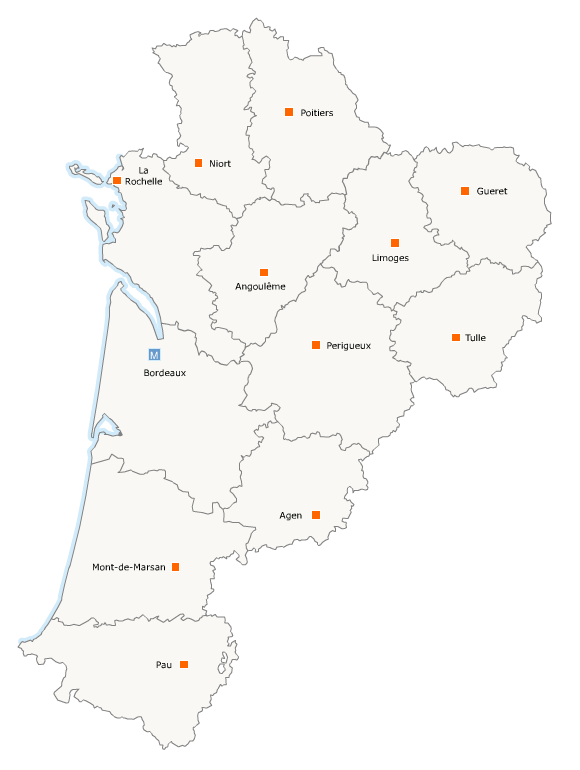
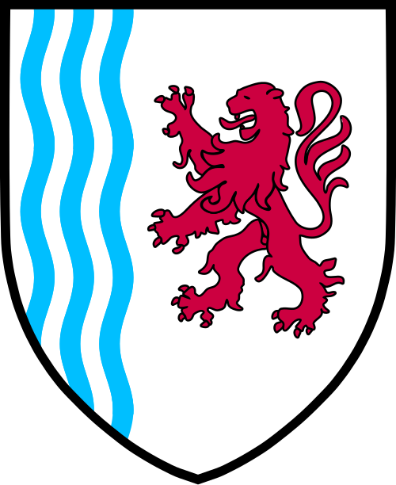
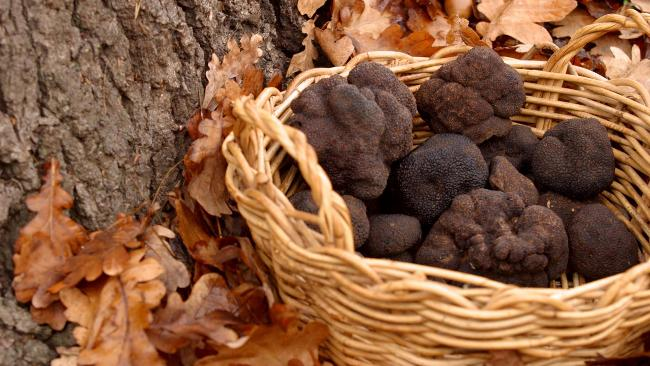
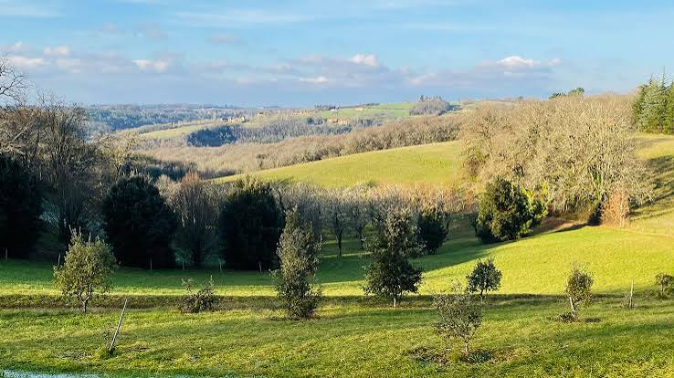

La truffe noire du Périgord, Tuber melanosporum, est l'un des produits les plus rares et les plus convoités de la gastronomie mondiale. Surnommée le « diamant noir » de la cuisine française, elle pousse dans les sols calcaires et argilo-calcaires des forêts périgordines, en symbiose avec les racines du chêne pubescent, du chêne vert et parfois du noisetier ou du charme.

Les premières mentions écrites de la truffe du Périgord remontent au XIVe siècle, mais sa consommation est attestée bien avant dans les populations rurales locales qui la ramassaient au hasard de leurs promenades en forêt. Ce n'est qu'à partir du XVIIIe siècle que la truffe noire devient véritablement un produit de luxe, prisé par la noblesse et la grande bourgeoisie française.
« La truffe est le diamant de la cuisine. »
— Jean Anthelme Brillat-Savarin, Physiologie du Goût, 1825Le XIXe siècle représente l'âge d'or de la truffe périgordine. Les paysans défrichent les garrigues calcaires et plantent des chênes truffiers sur des milliers d'hectares. La production atteint alors des sommets historiques — on estime qu'entre 1880 et 1900, la Dordogne produisait jusqu'à 1 500 tonnes de truffes par an. La truffe noire du Périgord figurait alors sur toutes les grandes tables européennes, de Paris à Saint-Pétersbourg.
L'exode rural du XXe siècle, l'abandon des terres agricoles et les deux guerres mondiales provoquent un effondrement dramatique de la production. Aujourd'hui, la France ne produit plus que 20 à 80 tonnes par an selon les années, dont une large partie en Périgord et dans le Lot voisin. Cette rareté explique les prix vertigineux — parfois plus de 1 000 euros le kilo en année difficile.

Depuis les années 1980, une renaissance truffière s'amorce grâce à la replantation de chênes mycorhizés et aux progrès de la trufficulture. Des truffières de plus en plus nombreuses voient le jour en Périgord, portées par des passionnés qui perpétuent un savoir-faire multi-séculaire tout en l'adaptant aux connaissances scientifiques modernes.
Truffe fraîche en lamelles : la façon la plus noble de la consommer. Quelques lamelles fines sur des pâtes, un risotto, des pommes de terre vapeur ou une omelette — la chaleur du plat suffit à libérer tous les arômes sans cuisson agressive.
Truffe en conserve (appertisée) : stérilisée en bocal, elle perd une partie de ses arômes mais reste un produit de qualité pour les sauces, les farces et les préparations mijotées tout au long de l'année.
Truffe surgelée : alternative économique qui conserve mieux les arômes que la conserve. À utiliser directement sans décongélation dans les plats chauds.
Huile de truffe artisanale : huile d'olive infusée avec des pelures ou des brisures de truffe noire. À utiliser crue, en filet sur un plat fini — jamais en cuisson, la chaleur détruisant les arômes volatils.
Beurre de truffe : mélange de beurre et de truffe râpée, façonné en rouleau et conservé au congélateur. Une noisette fondue sur un steak ou une volaille transforme un plat simple en expérience gastronomique mémorable.
La truffe noire du Périgord se trouve sur les marchés spécialisés, directement chez les trufficulteurs ou dans les conserveries artisanales de la région.
Marché aux truffes de Sarlat — Le plus célèbre du Périgord Noir, animé chaque samedi matin de décembre à mars. Des dizaines de producteurs y exposent leurs truffes fraîches du jour.
Marché aux truffes de Sainte-Alvère — Marché de référence en Périgord Blanc, réputé pour la qualité et la traçabilité des truffes vendues. Ouvert chaque lundi matin de mi-novembre à mars.
Périgueux — Plusieurs conserveries et épiceries fines du centre-ville proposent truffes fraîches en saison et produits truffés toute l'année.
Les trufficulteurs en vente directe — Nombreux en Dordogne et dans le Lot, ils vendent leur production sur les marchés ou directement à la ferme sur rendez-vous. La meilleure façon d'obtenir une truffe fraîche de première qualité à prix juste.
Brive-la-Gaillarde (Corrèze) — Ville voisine du Périgord, son marché de Noël et ses conserveries artisanales proposent une large sélection de produits truffés régionaux.